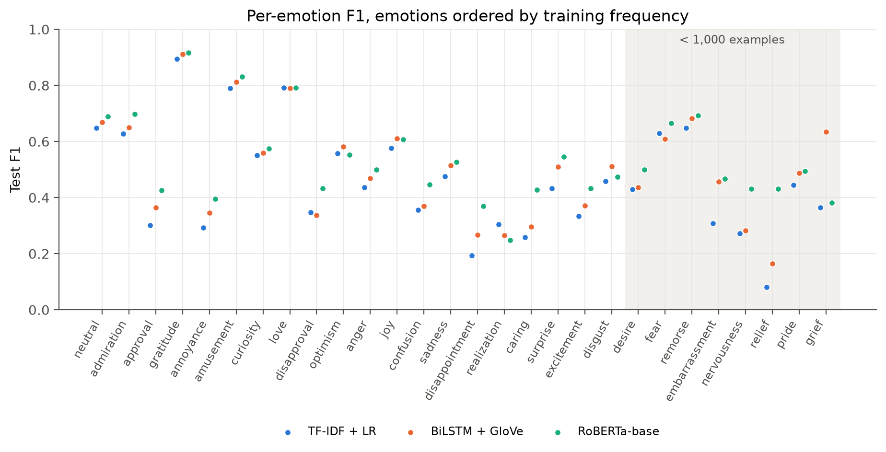
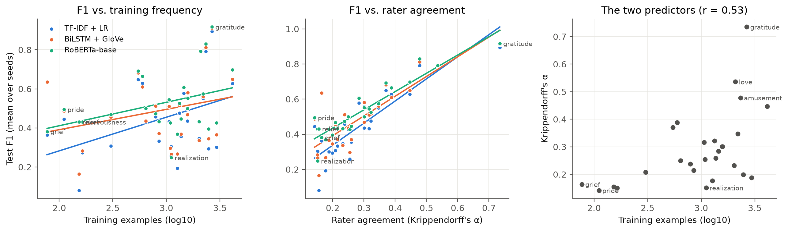

Problem. Triage and moderation systems care most about rare emotions (grief, nervousness, fear), which have the least data. A good average score can hide near-zero recall on them.
Data. GoEmotions: 54k Reddit comments, 27 emotions + neutral, multi-label, 3 to 5 raters each. Grief has 77 training examples, admiration 4,130.
Questions
| System | Chosen on dev |
|---|---|
| Prior / always-neutral | floors |
| TF-IDF + LR | 1-2 grams, C = 1 |
| BiLSTM + GloVe | h 256, lr 1e-3 |
| RoBERTa-base | lr 3e-5, ≤ 5 epochs |
Changes from the proposal
| Test (n = 5,385) | Macro-F1 | ROC-AUC | Norm. AP |
|---|---|---|---|
| Prior | 0.042 | 0.50 | 0.00 |
| TF-IDF + LR | 0.457 | 0.90 | 0.39 |
| BiLSTM + GloVe | 0.498 ± .005 | 0.92 | 0.46 |
| RoBERTa-base | 0.534 ± .003 | 0.93 | 0.50 |
Paired bootstrap Δ macro-F1:
RoBERTa − TF-IDF +0.077 [0.056, 0.096]
RoBERTa − BiLSTM +0.035 [0.016, 0.053]
Per-label thresholds add +0.04 for RoBERTa (global 0.5 gives 0.497), mostly on rare emotions. Published BERT: 0.46.


Limitations. 27 points per regression; grief has 5 test comments; α and gold labels come from the same raters; one domain.
Next steps